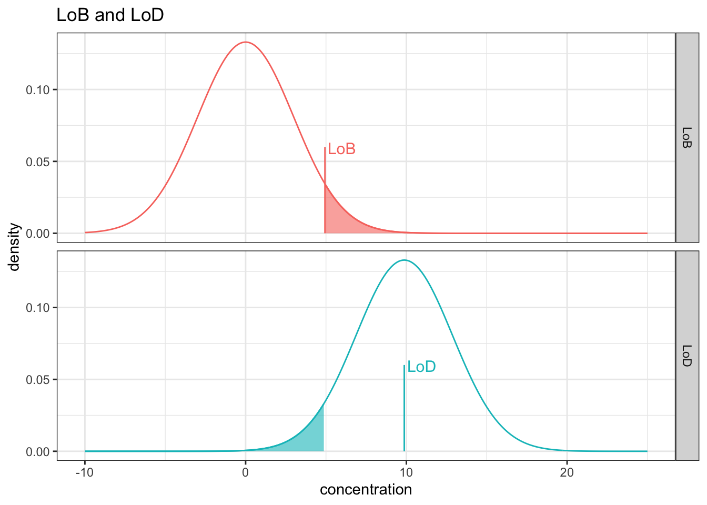

3 Sensitivity Studies
This chapter serves as a guide to sensitivity studies—a critical component in the development and validation of In Vitro Diagnostic (IVD) medical devices. The accuracy and reliability of an IVD assay hinge upon its ability to reliably detect and measure the target analyte, especially at low concentrations.
A test’s sensitivity is generally characterized by three key parameters: the Limit of Blank (LoB), the Limit of Detection (LoD), and the Limit of Quantitation (LoQ). Understanding the distinctions and appropriate determination of these limits is paramount for establishing a test’s performance claims and ensuring patient safety. This volume will detail the methodologies, statistical considerations, and best practices for conducting these essential sensitivity studies, providing the necessary framework for robust IVD development.
4 Defining Sensitivity Parameters
4.1 Limit of Blank (LoB)
The Limit of Blank (LoB) is the highest measurement result that is likely to be observed for a blank sample—a sample known not to contain the target analyte. Statistically, the LoB is the concentration value at which a blank sample (containing zero analyte) will measure 95% of the time. This value is associated with a 5% false positive error rate (Type I error, α)—meaning 5% of true blank samples will incorrectly yield a result greater than the LoB.
Purpose: LoB helps to distinguish between actual signal and the background noise inherent to the assay system.
Determination: It’s typically calculated from the mean of replicate measurements of several blank samples, plus a factor (often 1.645× the standard deviation of those measurements) to establish a non-parametric or parametric upper bound (often 95th percentile) of the blank distribution.
4.1.1 Limit of Detection (LoD)
The Limit of Detection (LoD) is the lowest concentration of analyte that can be reliably detected.
Purpose: LoD is the concentration at which the assay can reliably differentiate a sample that contains the analyte from a blank sample.
Determination: The LoD must be greater than the LoB. It’s often calculated by adding a factor to the LoB (e.g., 1.645× the standard deviation of low-concentration samples) or determined through a method that assesses the probability of detection (e.g., the concentration at which a test yields a true positive result 95% of the time).
The relationship between the limit of blank and limit of detection is defined by the following equation:
\[x_{LoD} = x_{LoB} \space + \space k \cdot f_{sd}(x)\] where \(k = 1.645\) and \(f_{sd}(x)\) is the function of standard deviation by concentration \(x\). For cases when the standard deviation is constant across the low concentration range, the standard deviation is constant the equation simplifies to \(x_{LoD} = x_{LoB} \space + \space k \cdot \hat\sigma_{x}\)
The function \(f_sd(x)\) is often referred to as a precision profile model. There are a set of well defined precision profile models that will be covered later in the book.
4.1.2 Limit of Quantitation (LoQ)
The Limit of Quantitation (LoQ) is the lowest concentration of analyte that can be reliably measured with an acceptable level of accuracy and precision (i.e., minimal bias and variability).
- Purpose: Unlike the LoD, which focuses on mere presence/absence, the LoQ defines the lowest concentration for which a quantitative value can be reported with confidence. Measurements below the LoQ should typically be reported as “Below the Limit of Quantitation” or similar.
4.1.2.1 Initial Focus on LoQ: The 20% CV Methodology
In this initial edition, we will focus on a widely accepted method for determining the LoQ: identifying the concentration associated with a 20% Coefficient of Variation (CV).
CV Definition: The CV is the standard deviation expressed as a percentage of the mean (i.e., CV=(MeanStandard Deviation)×100%). It serves as a normalized measure of precision.
Methodology: The process involves testing multiple replicates across a range of low analyte concentrations. The concentration at which the imprecision (variability) of the assay drops to a level deemed acceptable—in this initial case, a CV of 20%—is established as the LoQ. This ensures that quantitative results reported at or above this level have acceptable analytical precision for clinical utility.
5 LoB Calculations
\[LoB = M_B + c_p \cdot SD_B\]
where \(c_p\) is defined as: \[c_p = \frac{1.645}{1-\left( \frac{1}{4 \cdot(N - \space K)} \right) } \]
where \(N\) is the total number of replicates and \(K\) is the number of blank samples. The minimum study design requires \(N = 60\) and \(K = 4\). This effective adjustment is small, and in many estimates is not adjusted.
\[1-\left( \frac{1}{4 \cdot(60 - \space 4)} \right) \approxeq 0.99554\]
this would inflate the \(c_p\) value to approximately 1.6524. The magnitude of change is small especially considering the assumption that it is appropriate to pool the 4 samples together and get an overall standard deviation. For completeness, it is relatively easy to include the adjustment. However, this is one (of many) examples where the CLSI committee may have better served practitioners by simplifying the calculation.